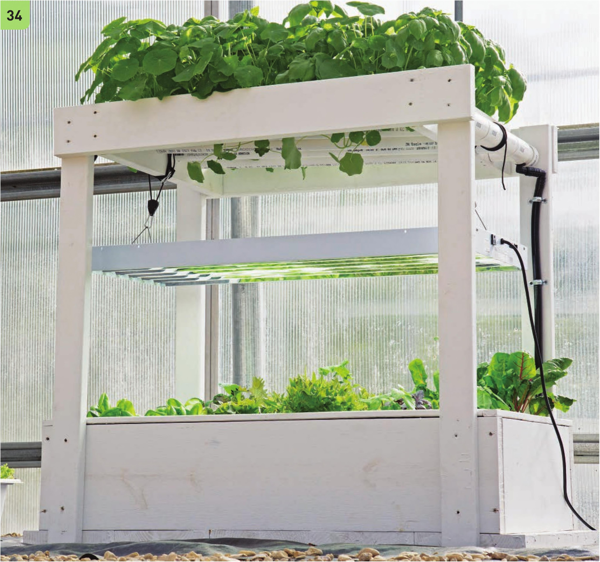

33 Add the second screw to the crossbeams to securely fasten them to the 2 x 6" x 4' boards. 34 If this NFT garden is built over the floating raft garden, adding a grow light for the floating raft garden can be a huge help. It is possible to grow plants in the raft system without adding a grow light, but growth may be slow and stretched. This design uses a 4' six-tube T5 light. HYDROPONIC GROWING SYSTEMS 81
